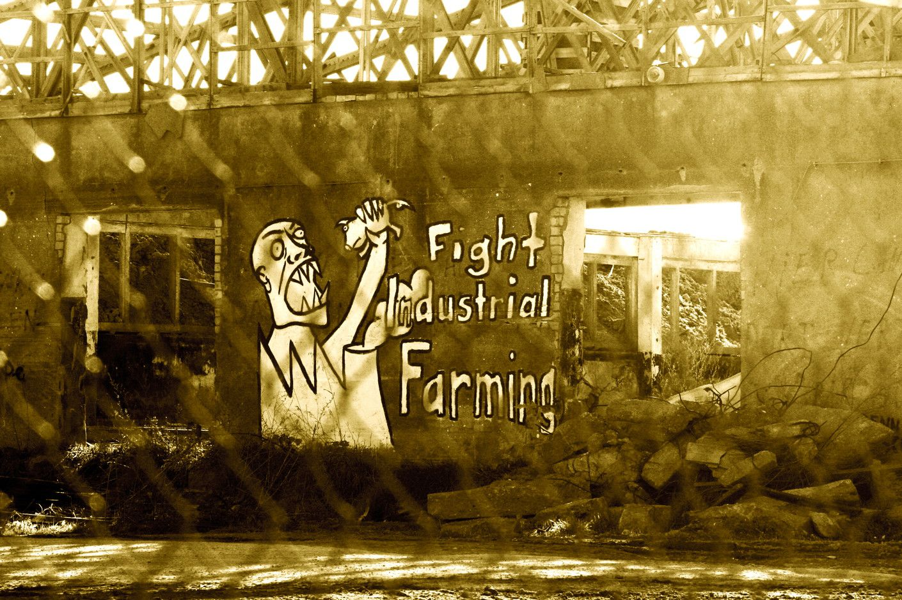
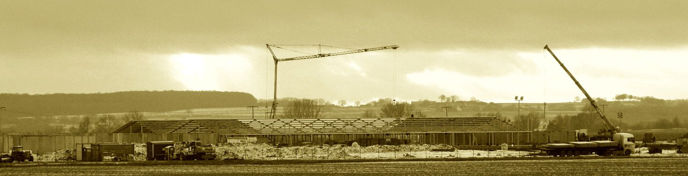
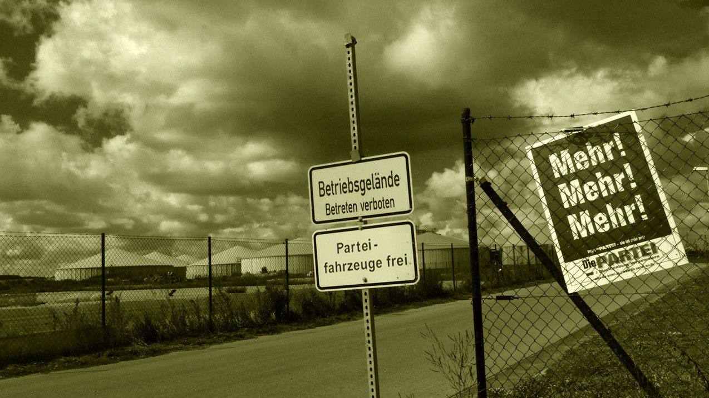

Fleisch & Gülle
Kreis
Tourismusentwicklungsgebiet Lassaner Winkel ade? Es gab Prioritätenlisten der alten Kreise OVP, Ueckermünde und im aufgespaltenen Landkreis …
Seite lesen →Mahnwache
auch nach dem Ende der Sommerzeit, immer noch jeden Montag Mahnwache vor der hiesigen Ferkelfabrik „Seit 2011 betreiben Mitglieder der Bürge…
Seite lesen →Infoarchiv
2006 am Tag der Befreiung erschien den Einwohnern der Gemeinde Alt Tellin auf der Ratsversammlung in der Storchenbar der damals schon verurt…
Seite lesen →Bewegte Bilder
Nobelpreisträger: Mastanlage ist „globaler Wahnsinn" Sie werden nicht müde, um gegen den Bau der Ferkelaufzuchtanlage in Alt Tellin zu demon…
Seite lesen →Wasser
Krautung und Böschungsmahd im Tollensetal Das Tollense-Einzugsgebiet wird intensiv landwirtschaftlich bewirtschaftet. Daher gibt es hohe Näh…
Seite lesen →

